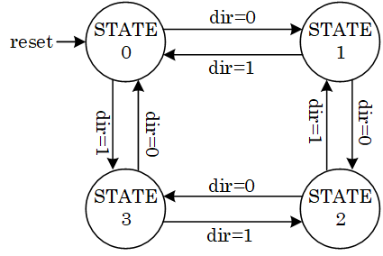
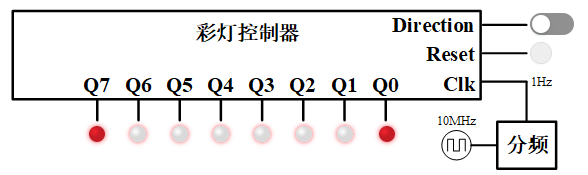

彩灯控制器实验
实验内容和要求
参考设计
实验材料中给出了一个有限状态机Blinking_LEDs_FSM的设计代码，其状态图如图 1。

图 1. 彩灯控制器参考设计的状态图
状态转移条件已在图上给出，输出是LED的花型oPattern，各个状态下的输出值见下表。
| STATE0 | STATE1 | STATE2 | STATE3 | |
|---|---|---|---|---|
oPattern |
10000001 |
01000010 |
00100100 |
00011000 |
该状态机的状态转移是由dir控制的，dir=0时LED由外向内移动，dir=1时LED由内向外移动。效果如图 2。

图 2. 彩灯控制器参考设计的运行效果
理解设计代码，学会使用HDL语言描述有限状态机。